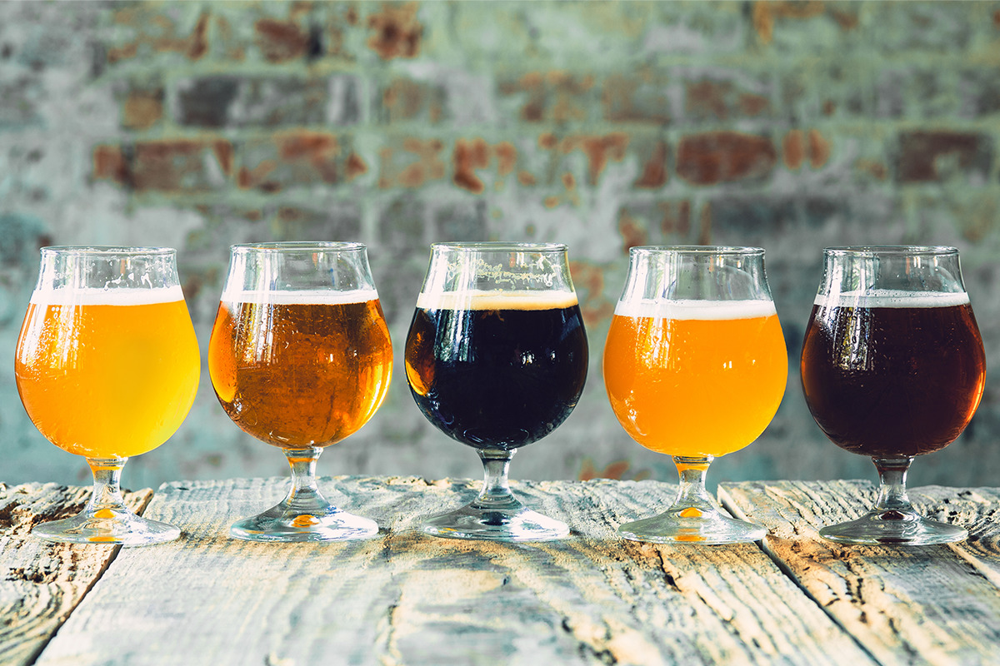
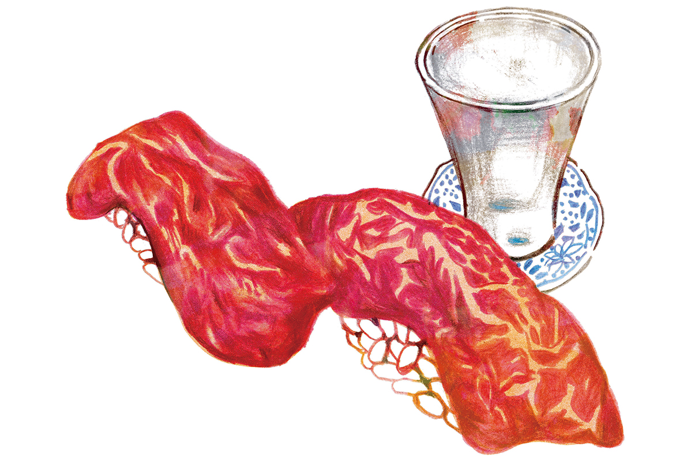
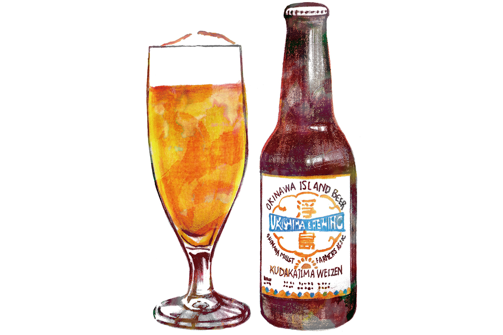

Префектура Окинава · Наха · еда и бары
Вечер по барам Нахи: пять заведений, куда местные водят друзей

Лучшие бары Нахи стоят не на главной туристической улице, а в переулках и на окраинах кварталов. Где пить и есть в городе, рассказывает писатель-документалист, который больше десяти лет живёт на два дома: в Токио и в Нахе.
Проводник
Как выбирает местный житель
Наш проводник родился в префектуре Айти, пишет документальную прозу и уже больше десяти лет живёт попеременно в Токио и на Окинаве. Его книга об изнанке окинавской жизни получила главную премию книжных магазинов Окинавы.
Все эти годы, признаётся он, он ездил туда, где обещали что-то особенно вкусное, и разыскивал редкую традиционную еду, к которой подбирал подходящую выпивку. С возрастом есть и пить так много уже не получается. Рабочий кабинет у него в центре Нахи, поэтому, если нет поездок, он ужинает в пешей доступности. Когда в Наху приезжают друзья из Токио или других городов, он ведёт их в свои повседневные места.
Асато
«Сумирэ тяя Татифудзи»: рыба, сваренная в соли
В районе Асато работает «Сумирэ тяя Татифудзи». На популярных сайтах с отзывами о ней почти ничего нет, но местные завсегдатаи любят её много лет. Хозяева покупают местную рыбу и готовят её разными способами, а лучше всего у них «масу-ни»: «масу» на окинавском диалекте значит «соль».
Разделанную рыбу просто варят в соли. Вместе с ней можно попросить сварить водоросли «аса» и плотный окинавский тофу «сима-тофу». Вкус получается мягким и глубоким.
«Сумирэ тяя Татифудзи»
- Адрес
- префектура Окинава, Наха, Асато, 48-201
- Часы работы
- 17:00–22:30 (последний заказ)
- Выходные
- нерегулярно
Томари
«Татиномидокоро Кусибута»: потроха на шпажках
В жилом квартале Томари стоит «Татиномидокоро Кусибута», закусочная без стульев, где жарят потроха на шпажках. Сейчас в барах Нахи мода пить стоя, а это заведение было среди первых, где гости пьют, тесно прижавшись плечом к плечу у стойки.
Свинину на Окинаве едят много, но жарить потроха, в основном свиные, на шпажках по отдельным частям здесь почти не было принято. «Кусибута» стала первой и в этом. Свежие потроха и редкие части туши здесь тщательно готовят и жарят на точно выверенном огне, и это мастерство каждый раз удивляет нашего проводника. Зимой в меню есть оден, в который кладут свиное горло размером с кулак, сваренное целиком.
«Татиномидокоро Кусибута»
- Адрес
- префектура Окинава, Наха, Томари, 1-22-16
- Часы работы
- 17:00–24:00 (последний заказ в 23:00)
- Выходные
- воскресенье
Макиси
«Комэсэн»: суши и сакэ за 1000 иен
На крытой торговой улице Итиба-дори в районе Макиси работает суши-бар «Комэсэн». Его конёк «сэмбэро», так в Японии называют заведения, где можно выпить и закусить примерно на тысячу иен. Шеф родом с Хоккайдо, учился ремеслу в том числе в токийском квартале Гиндза. Пять суши в токийском стиле на выбор повара и два напитка стоили 1000 иен в 2022 году.

Из напитков рекомендуем японское сакэ. Марку выбирает заведение, но здесь всегда есть сакэ дзюммай, бокал которого в Токио стоил бы около тысячи иен. Выгоднее места наш проводник, по его словам, не встречал: одно время он ходил сюда почти каждый день, пока жил на Окинаве. Суши с говядиной с острова Исигаки здесь стоили всего 100 иен за штуку в 2022 году.
«Комэсэн»
- Адрес
- префектура Окинава, Наха, Мацуо, 2-10-20
- Телефон
- +81 98-917-4711
- Часы работы
- 17:30–23:00 (зависит от поставок)
- Выходные
- среда, иногда нерегулярно
Пиво
Ukishima Brewing: пиво, которое не нужно закусывать
В нескольких десятках метров от «Комэсэн» находится Ukishima Brewing, бар крафтового пива. Здесь можно пить бокал за бокалом без всякой закуски, просто ради вкуса и горечи самого пива, и представление о нём меняется. Закуски, впрочем, тоже продуманные.

Ukishima Brewing
- Адрес
- префектура Окинава, Наха, Макиси, 3-3-1, торговое здание Суйдзё, второй квартал, 3-й этаж
- Телефон
- +81 98-894-2636
- Часы работы
- 17:00–23:00 (последний заказ в 22:00)
- Выходные
- среда
Сакаэмати
«Отон»: бар на рынке по пятницам и субботам
Ближе всего к дому нашего проводника квартал Сакаэмати. Он небольшой, но в нём есть свой общественный рынок, и бары здесь делятся на те, что внутри рынка, и те, что снаружи. Внутри, только по пятницам и субботам, открывается «Отон», и пропускать его нельзя.
Хозяин родом из Осаки, поэтому закуски в основном кансайские, например «ика-яки», лепёшка с кальмаром. Есть и окинавские блюда в его прочтении: хрящи свиных рёбрышек «нанкоцу-соки» с соусом пондзу или холодный рыхлый тофу «юси-тофу». Всё просто и вкусно.
«Отон»
- Адрес
- префектура Окинава, Наха, Асато, 379-21, рынок Сакаэмати
- Телефон
- +81 90-9049-1723
- Часы работы
- 18:00–24:00 (последний заказ в 23:00)
- Выходные
- с воскресенья по четверг
Совет
Ищите в переулках
На главной улице Нахи, Кокусай-дори, стоят рестораны, которые делают ставку на «окинавский колорит». Среди них есть и такие, где кормят по-настоящему хорошо. Но недорогие и вкусные места, по опыту нашего проводника, обычно прячутся в неприметных переулках и на окраинах кварталов.